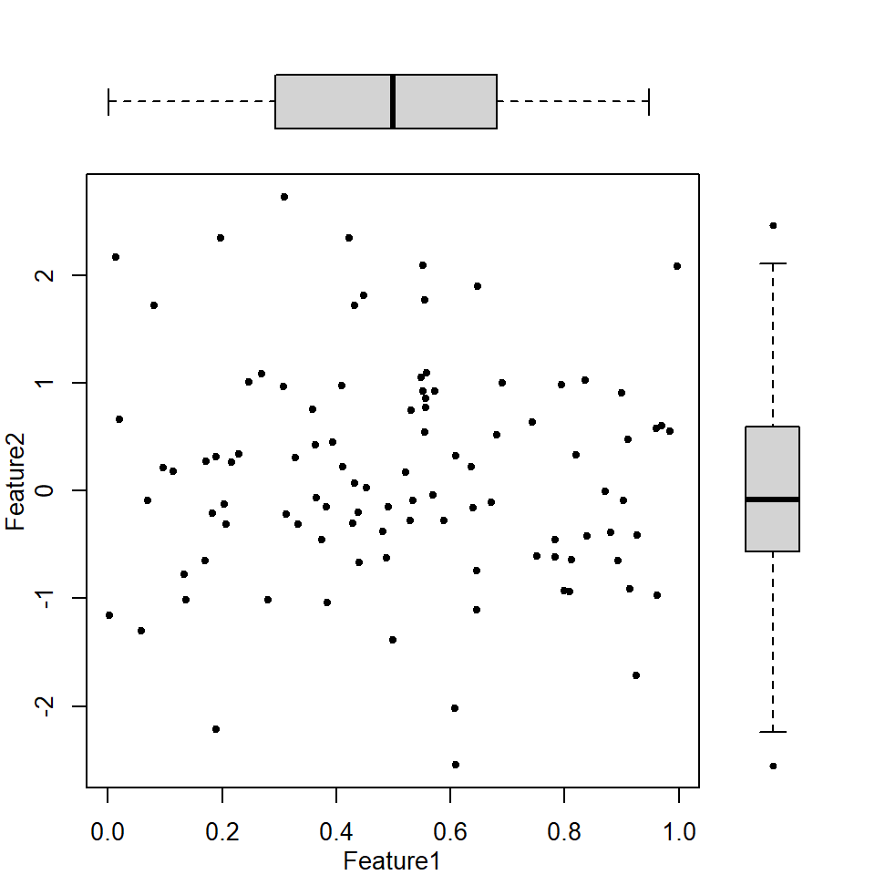
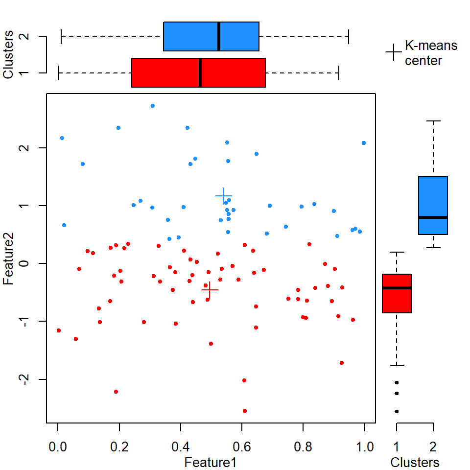
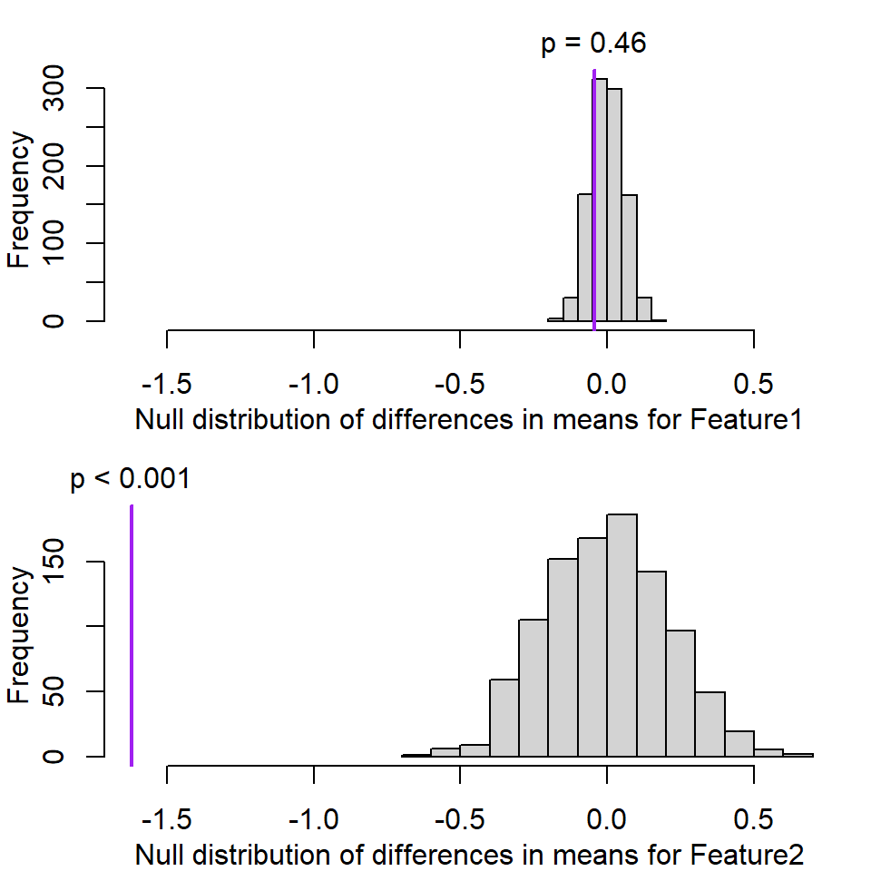

Its the last class! Let’s do some silly exercises that I’m making up off the top of my head, then see if there are any gotchas to cover for the course project.
Demonstrate to me why its a terrible idea to cluster data on a set of features then use traditional hypothesis testing to show that the features are different between clusters.
Remember rnorm to randomly sample from a normal distribution, or runif to sample from the uniform distribution.
Check out ?kmeans for a simple clustering method.
The function t.test will do the classic Student’s T-test, but you can also use wilcox.test for the popular non-parametric Wilcoxon rank-sum test.
DM <- data.frame(Feature1=runif(100),
Feature2=rnorm(100))
layout(matrix(c(2,1,0,3),nrow=2),widths=c(4,1),heights=c(1,4))
par(mar=c(3,3,0,0),mgp=2:0)
plot(DM,pch=20)
par(mar=c(0,3,1,1),bty="n")
boxplot(DM$Feature1,horizontal=T,xaxt="n",pch=20)
par(mar=c(3,0,1,1),bty="n")
boxplot(DM$Feature2,horizontal=F,yaxt="n",pch=20)
temp_CL <- kmeans(DM,centers=2)
DM$Clusters <- temp_CL$cluster
layout(matrix(c(2,1,4,3),nrow=2),widths=c(4,1),heights=c(1,4))
par(mar=c(3,3,0,0),mgp=2:0)
plot(Feature2~Feature1,data=DM,
pch=20,col=c("red","dodgerblue")[DM$Clusters])
points(temp_CL$centers,pch=3,cex=2,col=c("red","dodgerblue"))
par(mar=c(0,3,1,1),bty="n")
boxplot(Feature1~Clusters,data=DM,
horizontal=T,xaxt="n",pch=20,
col=c("red","dodgerblue"))
par(mar=c(3,0,1,1),bty="n")
boxplot(Feature2~Clusters,data=DM,
horizontal=F,yaxt="n",pch=20,
col=c("red","dodgerblue"))
par(mar=c(0,0,0,0),bty="n")
plot(NA,NA,xlim=0:1,ylim=0:1,xaxt="n",yaxt="n",xlab=NA,ylab=NA)
legend("center",pch=3,pt.cex=2,bty="n",
legend=paste("K-means","center",sep="\n"))
Test the null hypothesis that the two clusters have been sampled from the same distribution.
t.test(Feature1~Clusters,data=DM)##
## Welch Two Sample t-test
##
## data: Feature1 by Clusters
## t = -0.78805, df = 76.199, p-value = 0.4331
## alternative hypothesis: true difference in means is not equal to 0
## 95 percent confidence interval:
## -0.15420890 0.06676971
## sample estimates:
## mean in group 1 mean in group 2
## 0.4947226 0.5384422wilcox.test(Feature1~Clusters,data=DM)##
## Wilcoxon rank sum test with continuity correction
##
## data: Feature1 by Clusters
## W = 1050, p-value = 0.4116
## alternative hypothesis: true location shift is not equal to 0t.test(DM$Feature2[DM$Clusters == 1],
DM$Feature2[DM$Clusters == 2])##
## Welch Two Sample t-test
##
## data: DM$Feature2[DM$Clusters == 1] and DM$Feature2[DM$Clusters == 2]
## t = -12.285, df = 74.797, p-value < 2.2e-16
## alternative hypothesis: true difference in means is not equal to 0
## 95 percent confidence interval:
## -1.884114 -1.358319
## sample estimates:
## mean of x mean of y
## -0.4554402 1.1657760wilcox.test(DM$Feature2[DM$Clusters == 1],
DM$Feature2[DM$Clusters == 2])##
## Wilcoxon rank sum test with continuity correction
##
## data: DM$Feature2[DM$Clusters == 1] and DM$Feature2[DM$Clusters == 2]
## W = 0, p-value < 2.2e-16
## alternative hypothesis: true location shift is not equal to 0Wow, Feature2 is significantly different (p = 8.9955496^{-17} by Wilcoxon rank-sum test) between the two clusters. What does that actually mean?
“Parametric” testing has assumptions because it uses mathematically-defined distributions to define “chance of finding as extreme a result by chance”. If in doubt, you can always make your own background distribution by permutation testing. Here we’re essentially replicating the Student’s T-test (how likely is it that these means are the same?) using permutation testing:
# Permute cluster labels 1000 times:
BKGD <- replicate(n=1e3,{ sample(DM$Clusters) })
# Calculate differences in mean for 1000 randomly assigned clusters
# to generate null distributions for each feature:
F1bkgd_diffMean <- apply(BKGD,2,function(X)
mean(DM$Feature1[X==1]) - mean(DM$Feature1[X==2]))
F2bkgd_diffMean <- apply(BKGD,2,function(X)
mean(DM$Feature2[X==1]) - mean(DM$Feature2[X==2]))
# Calculate actual differences in means between clusters for each feature:
F1_diffMean <- mean(DM$Feature1[DM$Clusters == 1]) - mean(DM$Feature1[DM$Clusters==2])
F2_diffMean <- mean(DM$Feature2[DM$Clusters == 1]) - mean(DM$Feature2[DM$Clusters==2])
# Calculate p-values - proportion of random data at least as extreme as empirical data:
F1_pval <- mean(abs(F1bkgd_diffMean) >= abs(F1_diffMean))
F2_pval <- mean(abs(F2bkgd_diffMean) >= abs(F2_diffMean))
par(mfrow=c(2,1),mar=c(3,3,2,1),mgp=2:0)
hist(F1bkgd_diffMean,main=NA,
xlab="Null distribution of differences in means for Feature1",
xlim=c(min(F1bkgd_diffMean,F2bkgd_diffMean,F1_diffMean,F2_diffMean),
max(F1bkgd_diffMean,F2bkgd_diffMean,F1_diffMean,F2_diffMean)))
abline(v=F1_diffMean,lwd=2,col="Purple")
text(F1_diffMean,par("usr")[4],xpd=NA,pos=3,
labels=switch(as.character(F1_pval <= 0),
"FALSE"=paste("p =",signif(F1_pval,2)),
"TRUE"=paste("p <",1 / ncol(BKGD))))
hist(F2bkgd_diffMean,main=NA,
xlab="Null distribution of differences in means for Feature2",
xlim=c(min(F1bkgd_diffMean,F2bkgd_diffMean,F1_diffMean,F2_diffMean),
max(F1bkgd_diffMean,F2bkgd_diffMean,F1_diffMean,F2_diffMean)))
abline(v=F2_diffMean,lwd=2,col="Purple")
text(F2_diffMean,par("usr")[4],xpd=NA,pos=3,
labels=switch(as.character(F2_pval <= 0),
"FALSE"=paste("p =",signif(F2_pval,2)),
"TRUE"=paste("p <",1 / ncol(BKGD))))
Purple line is empirical difference in mean. Note that the calculated p-value for Feature 2 was zero, but technically that’s not correct - all we can say is that the probability of seeing a value that extreme by chance is less than the number of random permutations we tested (1000).